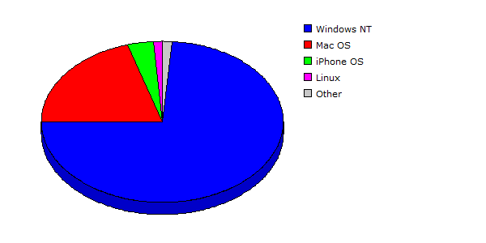

| Rank |
Operating System |
Hits |
Visitors |
| 1 |
Windows NT |
91253 |
71.56% |
6440 |
73.72% |
| 2 |
Mac OS |
27781 |
21.78% |
1770 |
20.26% |
| 3 |
iPhone OS |
849 |
00.67% |
306 |
03.50% |
| 4 |
Linux |
544 |
00.43% |
103 |
01.18% |
| 5 |
Windows XP |
6303 |
04.94% |
66 |
00.76% |
| 6 |
Windows Vista or Windows Server 2008 |
377 |
00.30% |
30 |
00.34% |
| 7 |
Windows Server 2003 |
396 |
00.31% |
16 |
00.18% |
| 8 |
Windows |
2 |
00.00% |
2 |
00.02% |
| 9 |
FreeBSD |
20 |
00.02% |
2 |
00.02% |
| 10 |
Windows 2000 |
1 |
00.00% |
1 |
00.01% |
| |
Total |
127526 |
8736 |
|
Description: This report contains statistics about the operating systems that your visitors use.
|
|